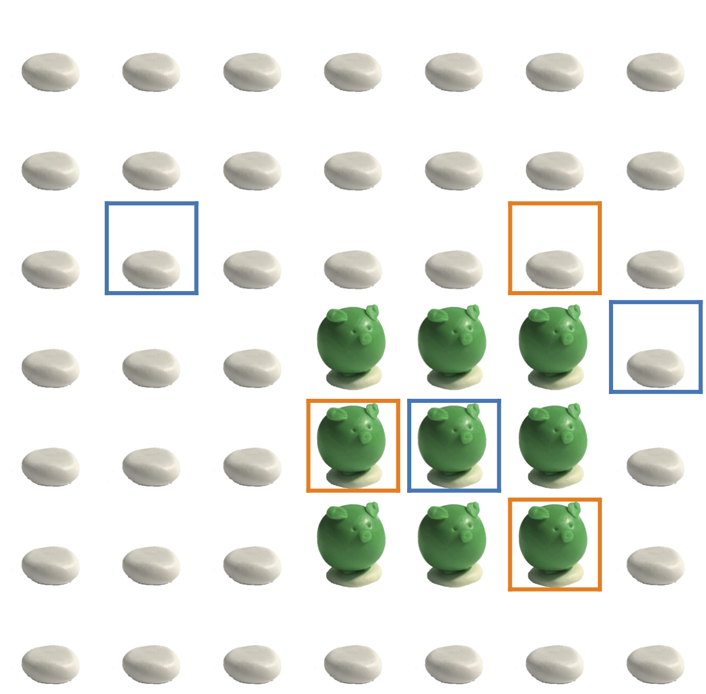

Program synthesizers are systems that take a specification of user intent as input, and synthesize a program in a domain-speci-c language (DSL) They typically assume the examples are chosen randomly, and don’t leverage the fact that humans choose examples pragmatically to convey their intent. They show that it is possible to build a program synthe-sizer that is both pragmatic and ef ficient by approximating the joint distribution of programs with a product of independent factors. This factored distribution approximates the exact joint distribution when evaluated on natural human inputs.
 They model program synthesis as a reference game between two agents – a speaker S and a listener L. The speaker chooses a specification – a set of examples D = u1u2 – to communicate a program h to the listener. The communication is successful if the listener is able to infer, or synthesize, the correct program given the speaker’s utterances. To model a pragmatic listener, propose using the Rational Speech.Acts (RSA) model to recursively reason about a speaker generating utterances according to a. aurallyspeaker distribution PS(D|h)
The grammar defines a set of K non-terminals, and a number of rules that expand Ni. The program can be simply represented as a sequence of production values: [R1, R2,..., RK]. Figure 1 shows the DSL they use in the experiments. Figure 2 shows two sample programs from the DSL, represented by a program that is not mutually recursive. They can also factorize the distribution of programs P(h|D) as well as PQQ(h) = Q1(R1 |D)Q2(R2|D), QK(RK)
They use speaker models to generate specifications from 1000 randomly chosen programs. They use a literal speaker SM0 to randomly generate utterances that are true of the program, and a pragmatic speaker SM1 to generate utterance under the joint speaker distribution in eq. (2) These are idealized cases of a perfectly literal and pragmatic (according to RSA) listeners respectively. They leverage human speaker data from, collected by interactions between interactions between Human → LJ0 and LJ1. Details of how the data are processed are presented in Appendix C.
In Figure 3a, they note that an idealized pragmatic speaker SM1 allows all the literal listener models to perform well. This suggests that under pragmatic specifications from SM1, the factorized distribution of LF0 approximates the exact, joint distribution LJ0 well, due to concentrating the probability mass in a smaller region that’s amendable to a factorized model. Heatmaps showing distribution over the distribution of two different non-terminals in the DLSL – Left and Right – that specify the left and right edges of the pattern respectively, are shown on the left.
Human speakers may intuitively be assuming a factored distribution while communicating with the synthesizer, for instance, choosing examples to communicate a particular cooridnates of one of the edges of the pattern. They suspect this is due to an ‘interaction gap’ where data from SH1 was collected by during interaction between the pair SH1 → LJ1. The human speaker had the opportunity to adjust their strategy and adapt their strategy but could not dynamically adapt to LF1 in the experiments.